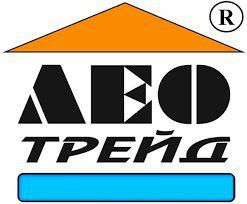
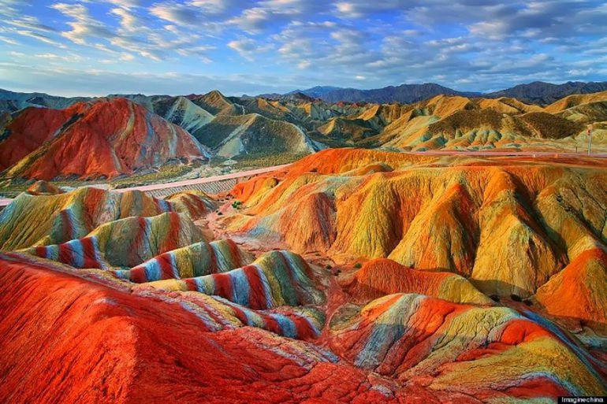
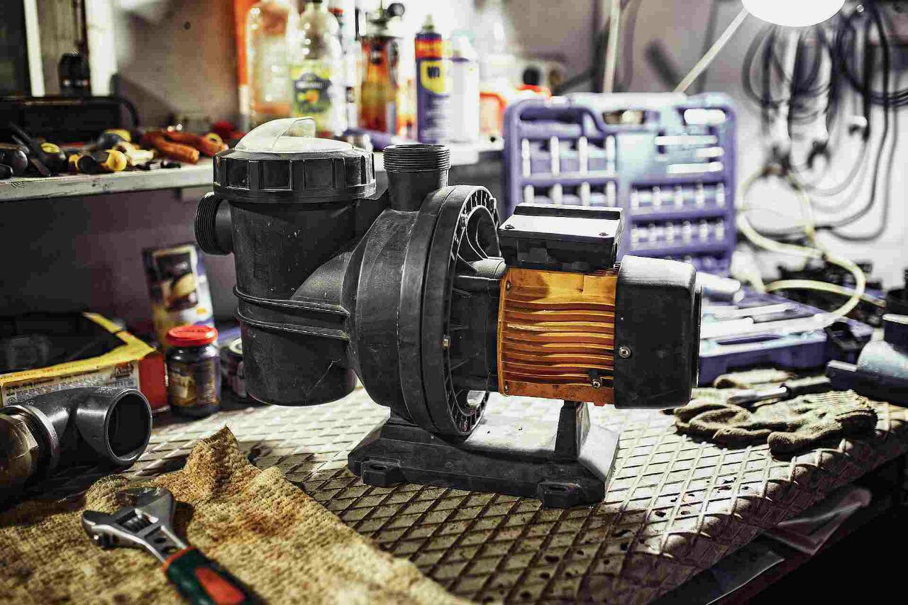
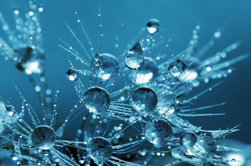
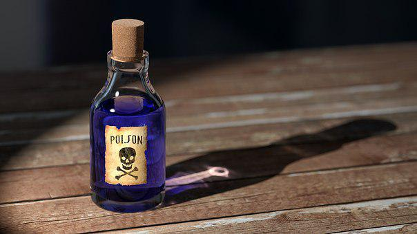

Главная
О нас
Контакты
ЛЕО ТРЕЙД
Современные технологии в строительстве
и содержании бассейна.
Сервисный центр по ремонту и обслуживанию бассейнов
Кварцевый песок

Подробнее
Ремонт насосного оборудования для бассейнов

Подробнее
Дезинфекция воды ионами серебра и меди

Подробнее
Химия, аксессуары, оборудование

Подробнее
Контакты:
Телефон:
+38(067) 102 10 15
+38(044) 390 34 72
+38(067) 231 58 09
Адрес:
улица Северо-Сырецкая, 1-3, Киев
Мы в социальных сетях:
.png "facebook")